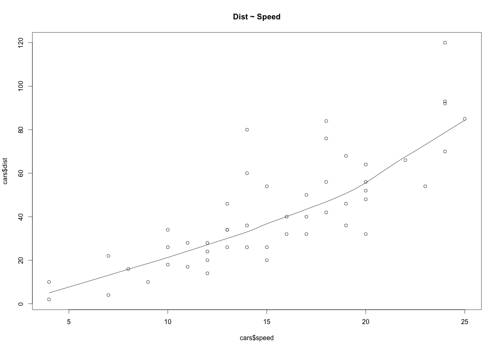
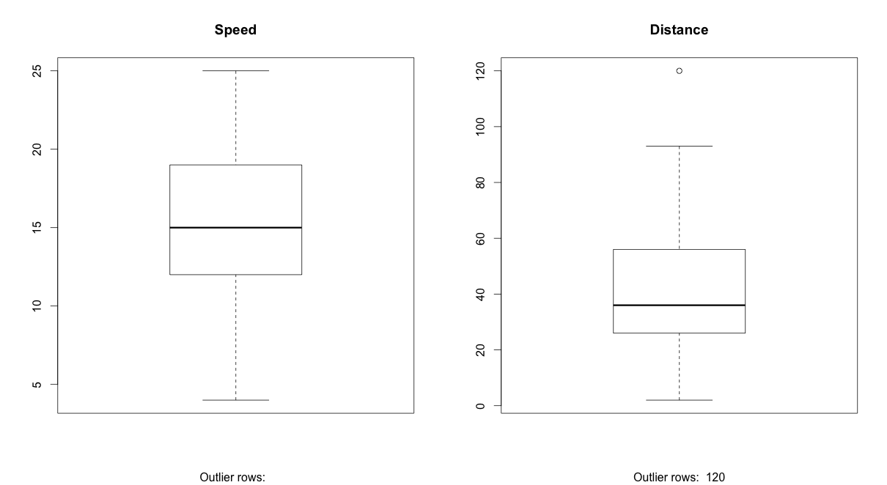
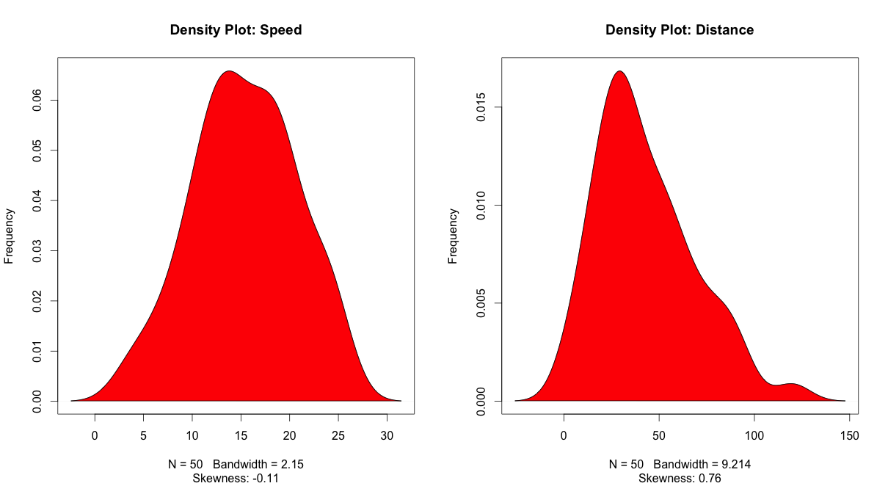
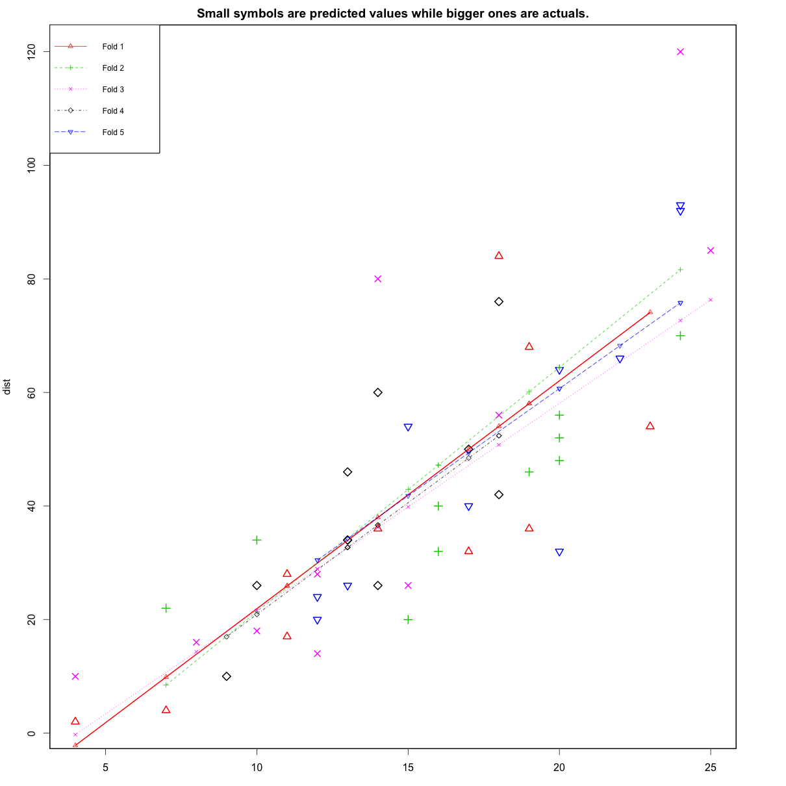

Linear regression is a fundamental predictive modelling technique that aims to predict the value of an outcome variable based on one or more input predictor variables. The aim is to establish a linear relationship (a mathematical formula) between the predictor variable(s) and the response variable, so we can use it to estimate the value of the response, when predictors values are known.
Introduction
For this analysis, we will use the ‘cars’ dataset that comes with R by default. ‘cars’ is a standard built-in dataset, that makes it convenient to demonstrate linear regression in a simple and easy to understand fashion. You can access this dataset simply by typing in ‘cars’ in your R console. You will find that it consists of 50 observations(rows) and 2 variables (columns) – Dist and Speed. Lets print out the first six observations here..
head(cars) # display the first 6 observations
#> speed dist
#> 1 4 2
#> 2 4 10
#> 3 7 4
#> 4 7 22
#> 5 8 16
#> 6 9 10Graphical Analysis
The aim of this exercise is to build a simple regression model that we can use to predict Distance (dist) by establishing a statistically significant linear relationship with Speed (speed). But before jumping in to the syntax, lets try to understand these variables graphically. Typically, for each of the independent variables (predictors), the following plots are drawn to visualize the followiing behaviour:
- Scatter plot: Visualize the linear relationship between the predictor and response
- Box plot: To spot any outlier observations in the variable. Having outliers in your predictor can drastically affect the predictions as they can easily affect the direction/slope of the line of best fit.
- Density plot: To see the distribution of the predictor variable. Ideally, a close to normal distribution (a bell shaped curve), without being skewed to the left or right is preferred. Let us see how to make each one of them.
Scatter Plot
Scatter plots can help visualize any linear relationships between the dependent (response) variable and independent (predictor) variables. Ideally, if you are having multiple predictor variables, a scatter plot is drawn for each one of them against the response, along with the line of best as seen below.
scatter.smooth(x=cars$speed, y=cars$dist, main="Dist ~ Speed") # scatterplot
The scatter plot along with the smoothing line above suggests a linearly increasing relationship between the ‘dist’ and ‘speed’ variables. This is a good thing, because, one of the underlying assumptions in linear regression is that the relationship between the response and predictor variables is linear and additive.
BoxPlot – Check for outliers
Generally, any datapoint that lies outside the 1.5 * ‘interquartile range’ (1.5 * IQR) is considered an outlier, where, IQR is calculated as the distance between the 25th percentile and 75th percentile values for that variable.
par(mfrow=c(1, 2)) # divide graph area in 2 columns
boxplot(cars$speed, main="Speed", sub=paste("Outlier rows: ", boxplot.stats(cars$speed)$out)) # box plot for 'speed'
boxplot(cars$dist, main="Distance", sub=paste("Outlier rows: ", boxplot.stats(cars$dist)$out)) # box plot for 'distance'
Density plot – Check if the response variable is close to normality
library(e1071)
par(mfrow=c(1, 2)) # divide graph area in 2 columns
plot(density(cars$speed), main="Density Plot: Speed", ylab="Frequency", sub=paste("Skewness:", round(e1071::skewness(cars$speed), 2))) # density plot for 'speed'
polygon(density(cars$speed), col="red")
plot(density(cars$dist), main="Density Plot: Distance", ylab="Frequency", sub=paste("Skewness:", round(e1071::skewness(cars$dist), 2))) # density plot for 'dist'
polygon(density(cars$dist), col="red")
Correlation
Correlation is a statistical measure that suggests the level of linear dependence between two variables, that occur in pair – just like what we have here in speed and dist. Correlation can take values between -1 to +1. If we observe for every instance where speed increases, the distance also increases along with it, then there is a high positive correlation between them and therefore the correlation between them will be closer to 1. The opposite is true for an inverse relationship, in which case, the correlation between the variables will be close to -1. Any value closer to 0 suggests a weak relationship between the variables. It is important to note that, correlation is a relative measure. You cannot reject a variable when building regression models because of ‘low’ correlation. A low correlation probably suggests that there are still unexplained variance in the response variable, in which case, we should probably look for new variables.
cor(cars$speed, cars$dist) # calculate correlation between speed and distance
#> [1] 0.8068949Build Linear Model
Now that we have seen the linear relationship pictorially in the scatter plot and by computing the correlation, lets see the syntax for building the linear model. The function used for building linear models is lm(). The lm() function takes in two main arguments, namely: 1. Formula 2. data The data is typicallly a data.frame and the formula is a object of class formula. But the most common convention is to write out the formula directly in place of the argument as seen below.
linearMod <- lm(dist ~ speed, data=cars) # build linear regression model on full data
print(linearMod)
#>
#> Call:
#> lm(formula = dist ~ speed, data = cars)
#>
#> Coefficients:
#> (Intercept) speed
#> -17.579 3.932Now that we have built the linear model, we also have established the relationship between the predictor and response in the form of a mathematical formula for Distance (dist) as a function for speed. For the above output, you can notice the ‘Coefficients’ part having two components: Intercept: -17.579, speed: 3.932 These are also called the beta coefficients. In other words,
dist = Intercept + (β ∗ speed)
=> dist = −17.579 + 3.932∗speed
Linear Regression Diagnostics
Now the linear model is built and we have a formula that we can use to predict the dist value if a corresponding speed is known. Is this enough to actually use this model? NO! Before using a regression model, you have to ensure that it is statistically significant. How do you ensure this? Lets begin by printing the summary statistics for linearMod.
summary(linearMod) # model summary
#>
#> Call:
#> lm(formula = dist ~ speed, data = cars)
#>
#> Residuals:
#> Min 1Q Median 3Q Max
#> -29.069 -9.525 -2.272 9.215 43.201
#>
#> Coefficients:
#> Estimate Std. Error t value Pr(>|t|)
#> (Intercept) -17.5791 6.7584 -2.601 0.0123 *
#> speed 3.9324 0.4155 9.464 1.49e-12 ***
#> ---
#> Signif. codes: 0 '***' 0.001 '**' 0.01 '*' 0.05 '.' 0.1 ' ' 1
#>
#> Residual standard error: 15.38 on 48 degrees of freedom
#> Multiple R-squared: 0.6511, Adjusted R-squared: 0.6438
#> F-statistic: 89.57 on 1 and 48 DF, p-value: 1.49e-12The p Value: Checking for statistical significance
This summary statistics tells us a number of things. One of them is the model p-Value (bottom last line) and the p-Value of individual predictor variables (extreme right column under ‘Coefficients’). The p-Values are very important because, We can consider a linear model to be statistically significant only when both these p-Values are less that the pre-determined statistical significance level, which is ideally 0.05. This is visually interpreted by the significance stars at the end of the row. The more the stars beside the variable’s p-Value, the more significant the variable.
In Linear Regression, the Null Hypothesis is that the coefficients associated with the variables is equal to zero. The alternate hypothesis is that the coefficients are not equal to zero (i.e. there exists a relationship between the independent variable in question and the dependent variable).
We can interpret the t-value something like this. A larger t-value indicates that that it is less likely that the coefficient is not equal to zero purely by chance.
Pr(>|t|) is the probability that you get a t-value as high or higher than the observed value when the Null Hypothesis (the coefficient is equal to zero or that there is no relationship) is true. So if the Pr(>|t|) is low the coefficients are significant (significantly different from zero). If the Pr(>|t|) is high, the coefficients are not significant. What this means to us is, when p Value is less that significance level, we can safely reject the null hypothesis that the co-efficient β of the predictor is zero. In our case, linearMod, both these p-Values are well below the 0.05 threshold, so we can conclude our model is indeed statistically significant.
It is extremely important for the model to be statistically significant before we can go ahead and use it to predict (or estimate) the dependent variable, otherwise, the confidence in predicted values from that model reduces and may be construed as an event of chance.ance
How to calculate the t Statistic and p-Values?
When the model co-efficients and standard error are known, the formula for calculating t Statistic and p-Value is as follows:
t − Statistic = β − coefficient/Std.Error
modelSummary <- summary(linearMod) # capture model summary as an object
modelCoeffs <- modelSummary$coefficients # model coefficients
beta.estimate <- modelCoeffs["speed", "Estimate"] # get beta estimate for speed
std.error <- modelCoeffs["speed", "Std. Error"] # get std.error for speed
t_value <- beta.estimate/std.error # calc t statistic
p_value <- 2*pt(-abs(t_value), df=nrow(cars)-ncol(cars)) # calc p Value
f_statistic <- linearMod$fstatistic[1] # fstatistic
f <- summary(linearMod)$fstatistic # parameters for model p-value calc
model_p <- pf(f[1], f[2], f[3], lower=FALSE)#> t Value: 9.46399
#> p Value: 1.489836e-12
#> Model F Statistic: 89.56711 1 48
#> Model p-Value: 1.489836e-12R-Squared and Adj R-Squared.
The actual information in a data is the total variation it contains, remember?. What R-Squared tells us is the proportion of variation in the dependent (response) variable that has been explained by this model. Also, we don’t necessarily have discard a model based on a low R-Squared value. It’s a better practice to look at the AIC and prediction accuracy on validation sample when deciding on the efficacy of a model.
Now that’s about R-Squared. What about adjusted R-Squared? As you add terms to your model, the R-Squared value of the new model will always be greater than that of its subset. This is because, since all the variables in the original model is also present, their contribution to explain the depend variable still remains in the super-set and therefore, whatever new variable we add can only enhance (if not significantly) what was already explained. Here is how, the adjusted R-Squared value comes to help. Adj R-Squared penalizes total value for the number of terms (read predictors) in your model. Therefore when comparing nested models, it is a good practice to look at adj-R-squared value over R-squared.
AIC and BIC
The Akaike’s information criterion AIC (Akaike, 1974) and the Bayesian information criterion BIC (Schwarz, 1978) are measures of the goodness of fit of an estimated statistical model and can also be used for model selection. Both criteria depend on the maximized value of the likelihood function L for the estimated model.
The AIC is defined as:
AIC = ( − 2) • ln(L) + 2 • k
where k is the number of model parameters and the BIC is defined as:
BIC = ( − 2) • ln(L) + k • ln(n)
where n is the sample size. For model comparison, the model with the lowest AIC and BIC score is preferred.
AIC(linearMod) # AIC => 419.1569
#> [1] 419.1569
BIC(linearMod) # BIC => 424.8929
#> [1] 424.8929How to know if the model is best fit for your data?
The most common metrics to look at while selecting the model are:
| STATISTIC | CRITERION |
|---|---|
| R-Squared | Higher the better |
| Adj R-Squared | Higher the better |
| AIC | Lower the better |
| BIC | Lower the better |
| Mallows cp | Should be close to the number of predictors in model |
| MAPE (Mean absolute percentage error) | Lower the better |
| MSE (Mean squared error) | Lower the better |
| Min_Max Accuracy => mean(min(actual, predicted)/max(actual, predicted)) | Higher the better |
Predicting Linear Models
So far we have seen how to build a linear regression model using the whole dataset. If we build it that way, there is no way to tell how the model will perform with new data. So the preferred practice is to split your dataset into a 80:20 sample (training:test), then, build the model on the 80% sample and then use the model thus built to predict the dependent variable on test data.
Doing it this way, we will have the model predicted values for the 20% data (test) as well as the actuals (from the original dataset). By calculating accuracy measures (like min_max accuracy) and error rates (MAPE or MSE), we can find out the prediction accuracy of the model. Now, lets see how to actually do this..
Step 1: Create the training (development) and test (validation) data samples from original data.
# Create Training and Test data -
set.seed(100) # setting seed to reproduce results of random sampling
trainingRowIndex <- sample(1:nrow(cars), 0.8*nrow(cars)) # row incices for training data
trainingData <- cars[trainingRowIndex, ] # model training data
testData <- cars[-trainingRowIndex, ] # test dataStep 2: Develop the model on the training data and use it to predict the distance on test data
# Build the model on training data -
lmMod <- lm(dist ~ speed, data=trainingData) # build the model
distPred <- predict(lmMod, testData) # predict distanceStep 3: Review diagnostic measures.
summary (lmMod) # model summary
#>
#> Call:
#> lm(formula = dist ~ speed, data = trainingData)
#>
#> Residuals:
#> Min 1Q Median 3Q Max
#> -23.350 -10.771 -2.137 9.255 42.231
#>
#> Coefficients:
#> Estimate Std. Error t value Pr(>|t|)
#> (Intercept) -22.657 7.999 -2.833 0.00735 **
#> speed 4.316 0.487 8.863 8.73e-11 ***
#> ---
#> Signif. codes: 0 '***' 0.001 '**' 0.01 '*' 0.05 '.' 0.1 ' ' 1
#>
#> Residual standard error: 15.84 on 38 degrees of freedom
#> Multiple R-squared: 0.674, Adjusted R-squared: 0.6654
#> F-statistic: 78.56 on 1 and 38 DF, p-value: 8.734e-11
AIC (lmMod) # Calculate akaike information criterion
#> [1] 338.4489From the model summary, the model p value and predictor’s p value are less than the significance level, so we know we have a statistically significant model. Also, the R-Sq and Adj R-Sq are comparitive to the original model built on full data.
Step 4: Calculate prediction accuracy and error rates
A simple correlation between the actuals and predicted values can be used as a form of accuracy measure. A higher correlation accuracy implies that the actuals and predicted values have similar directional movement, i.e. when the actuals values increase the predicteds also increase and viceversa.
actuals_preds <- data.frame(cbind(actuals=testData$dist, predicteds=distPred)) # make actuals_predicteds dataframe.
correlation_accuracy <- cor(actuals_preds) # 82.7%Now lets calculate the Min Max accuraccy and MAPE:
MinMaxAccuracy = Average(Min(Actuals, Predicteds)/Max(Actuals, Predicteds))
MeanAbsolutePercentageError(MAPE) = Average(abs(Predicteds − Actuals)/Actuals))
min_max_accuracy <- mean(apply(actuals_preds, 1, min) / apply(actuals_preds, 1, max)) # => 58.42%, min_max accuracy
mape <- mean(abs((actuals_preds$predicteds - actuals_preds$actuals))/actuals_preds$actuals) # => 48.38%, mean absolute percentage deviationk- Fold Cross validation
Suppose, the model predicts satisfactorily on the 20% split (test data), is that enough to believe that your model will perform equally well all the time? It is a best practice to rigorously test the model’s performance as much as possible. One way is to ensure that the model equation you have will perform well, when it is ‘built’ on a different subset of training data and predicted on the remaining data. How to do this is, split your data into ‘k’ mutually exclusive random sample portions. Each time, we keep one of the portions as test data, we build the model on the remaining (k-1 portion) data and calculate the mean squared error of the predictions. This is done for each k random samples.
By doing this, we can check if the model’s prediction accuracy isn’t varying too much for any one particular sample and if the lines of best fit don’t vary too much with respect the the slope and level, or, in other words, they should be parallel and as close to each other as possible. You can find a more detailed explanation for interpreting the cross validation charts when you learn about advanced linear model building.
library(DAAG)
cvResults <- suppressWarnings(CVlm(df=cars, form.lm=dist ~ speed, m=5, dots=FALSE, seed=29, legend.pos="topleft", printit=FALSE, main="Small symbols are predicted values while bigger ones are actuals.")); # performs the CV
attr(cvResults, 'ms') # => 251.2783 mean squared errorIn the below plot, Are the dashed lines parallel? Are the small and big symbols are not over dispersed for one particular color?

Where to go from here?
If you would like to learn more about the underlying assumptions and certain nuances behind regression modeling, check out the fundamentals of linear regression. If you wish to learn a more advanced and robust way to build regression models, check out the reproducible numeric example for advanced linear regression.